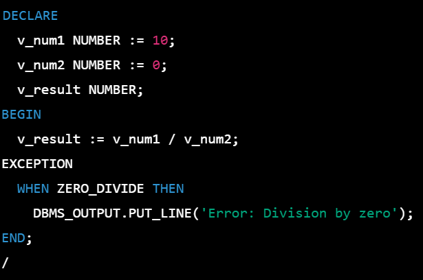

An exception is an error which disrupts the normal flow of program instructions. PL/SQL provides us the exception block which raises the exception thus helping the programmer to find out the fault and resolve it.
There are two types of exceptions defined in PL/SQL:
User defined exception.
Pre defined exceptions.
PL/SQL provides many pre-defined exceptions, which are executed when any database rule is violated by a program. For example, the predefined exception NO_DATA_FOUND is raised when a SELECT INTO statement returns no rows
PL/SQL facilitates their users to define their own exceptions according to the need of the program. A user-defined exception can be raised explicitly, using either a RAISE statement or the procedure DBMS_STANDARD.RAISE_APPLICATION_ERROR.
WHEN exception THEN statement;
DECLARE
declarations section;
BEGIN
executable command(s);
EXCEPTION
WHEN exception1 THEN
statement1;
WHEN exception2 THEN
statement2;
[WHEN others THEN]
/* default exception handling code */
END;
